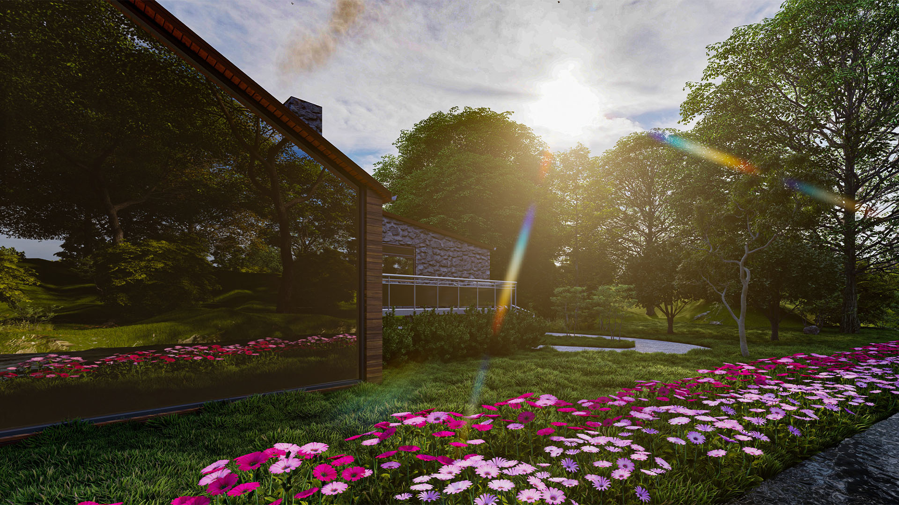
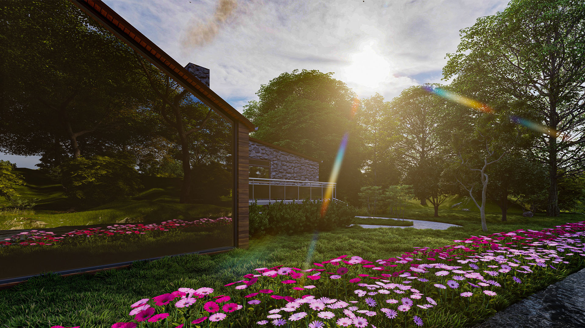

Portfolio
See My Latest Projects
Explore my portfolio below and discover what I have been working on!

Burrell in the City
University Project
Burrell in the City - Final Year Project
As part of my MEng programme, this design project let me showcase the architectural and engineering knowledge I’ve gained over the years comes together in practice. My goal was to produce a comprehensive proposal that satisfied every structural and spatial requirement in the given brief. To do so, I tackled the challenges of designing a multi-storey building in an urban setting, whilst developing a rich mix of spaces that could become new homes for several works from the Burrell Collection.


Cottage House
Extension | Home Refurbishment
Cottage House
This project was my very first real life project, which focused around a major re-design of almost all spaces in the dwelling.
The client has purchased the house, but they were not very satisfied with how the overall circulation worked in the house.
The dwelling did go through a renovation back in the 1990's, although it was restricted by financial availability, which led to the placement of the staircase in a very awkward position. This placement did not fully utilise all the possible available space in the dwelling.
This project focused on tackling these issues, transforming an unused room into a bathroom, whilst simultaneously creating a more private master bedroom.
The proposal also focused on designing the garden area and by bringing a double driveway space on the overgrown land space, whilst still maintaining a large area of greenery, to maintain the cozy vibe the property had to offer.


Suburban House (Ongoing)
Extension | Home Refurbishment
Detached Garage Proposal | Home Extension (Designs Pending)
This project involved creating a detached garage, situated in the rear curtilage of the site, which would act as a storage and working area for the client that was in the construction business. However, as the client did not require anything big, the design was restricted to the rules set out in the Permitted Development guide as well as Regulation 5 of Schedule 3 in the Building Regulations. This saved a lot of time and money for the client, allowing them to begin construction a lot faster.


Suburban House (Ongoing)
Extension | Home Refurbishment
Project 11: Conservatory Redesign
This proposal consisted of a redesign to an existing conservatory, transforming the space into a functional kitchen and dining area. This proposal aimed to tackle the tight spaces currently present in the dwelling, which have proven not to be functional enough for the client's needs.


 


Adjoined Housing
University Project
Adjoined Housing | Collaboration University Project
This was a project I done with my colleague from University; Charles Kinnon. It focused on creating a dwelling in a small plot of land, whilst also allowing for good amounts of natural light to travel into both properties.


House in the Mountains
Personal Project

Victorian Home
Home Refurbishment
Victorian House Redesign
This project focused on transforming an old Victorian Home into an open plan living space in the downstairs area, alongside an unused spare bedroom that the client wanted to use for different purposes.


Bo'Ness Library Crypt
University Project
Bo'Ness Library Redesign
This project was done as part of my 3rd Year portfolio. It was done in collaboration with my university colleague Charles Kinnon. It focused on transforming an old library into a more modern space, filled with new spaces that the people living in Bo'Ness could use.


Bedroom Alteration
Personal Project
Room Alteration Side Project
I designed and visualised a proposal for my flatmate's bedroom relating to how his room could be arranged, as he struggled with efficiently fitting all his furniture in a relatively tight space.


Small House in the Woods
Personal Project

Modern House
Personal Project

Art Design Studio + Apartments
University Project
SLOT | University Project
Final project of the year in year 4, focused on slotting an art studio, which also houses apartments on the top floors.